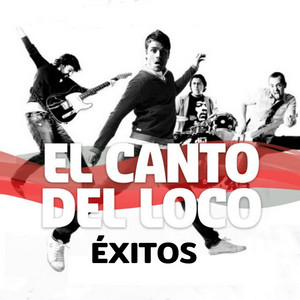

Historia

El Canto del Loco es un grup de musica espanyol originari de Madrid, fundat el 1994 per Dani Martín i ha tingut gran exit a Espanya amb cançons com "Insoportable" i "La madre de Jose". En catala es coneixen com "El Cant dels Ocells".
Discografia
· 12 Estados de ánimo (2003)
· Zapatillas (2005)
· Personas (2008)
· Radio La Colifata presenta: El Canto del Loco (2010)

Integrants

· Dani Martin: veu y guitarra.
· David Otero: guitarra y cors.